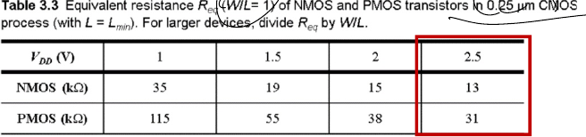
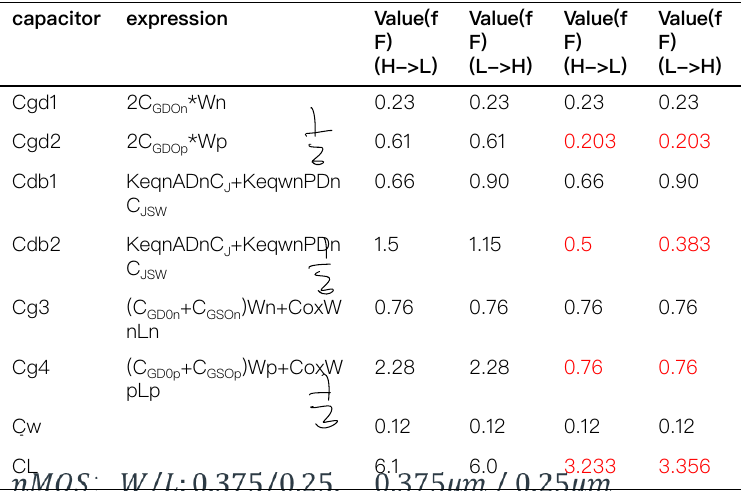
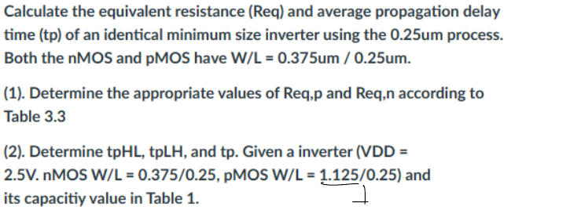

题目来源
考试相关/DIC Review/Chap3 反相器/hw4 answer.pdf · PDF页 10 · 原题号 计算1
原题按原编号列出；实验题明确整理为读图或笔试问法。重复知识点保留各来源版本，避免漏掉不同参数与条件。
先读：本题所需概念
输出需充放电的总电容叫负载 ，包含驱动门自己的本征输出电容 和后级栅、连线等外部电容 。导通器件对这次充放电的等效电阻记 。一阶近似中，输出跨过一半电源电压的时间约为 。 按输出下降、上升命名；平均延时为两者均值。门输入电容记 ，外部负载与它的比叫电气扇出。某题若把常数吸收入拟合参数，须按该题显式模型使用。
知识出处：PPT/chapter3-inverter02-dynamic behavior_T 20260929.pdf，PDF 第 7–10、34–45 页。
回看完整解释：2.5 信号变化时，要等多久 · 9.1 先找输出节点连着哪些电容 · 9.2 为什么某个跨接电容有时按两倍算 · 9.3 再找电流经过哪条路径 · 9.4 把管做大能解决所有延时吗。题目中的专用参数以题干定义为准；可点带底纹的术语回查首次解释。
题目
采用工艺，计算一个最小尺寸反相器的等效电阻和平均传播延迟；该反相器驱动一个与自身完全相同的反相器。与的尺寸均为。
根据表，确定适当的和。表给出、时的电阻；较宽器件的电阻应除以其。
计算、和平均延迟。已知表中参考反相器的、尺寸为、尺寸为（长度单位均为），各项电容见表。请据此换算题目所要求的等尺寸反相器及其相同下级负载的电容。电容位置同前题两级反相器图。
Table 3.3: Req for W/L=1, L=Lmin; larger devices divide by W/L
| （单位 ） | ||||
|---|---|---|---|---|
Table 1（源表，NMOS W/L=0.375/0.25 μm，PMOS W/L=1.125/0.25 μm）
| 电容 | 表达式 | 下降电容 | 上升电容 |
|---|---|---|---|
| 题给 | |||
| （源表圆整） | 分项相加 | ||
| （按所列分项精确相加） | 分项相加 |



查看答案与解析
答案与解析
、；HL、LH；按且保留中间数值得、、。
核对说明：
原Table 把分项总和、显示为、；它们是粗略圆整值，不能据此反推新表。
源表的公式误复制为参数，应使用面积周长及对应结电容、Keq参数。
缩为时，同时缩放驱动级的、以及相同下级的；项与保持不变。
按原讲义已采用的宽度线性电容近似核验。若重新做版图扩散提取，侧壁周长不必严格按成比例，那属于不同模型。
源解与保留分项有效数字结果的差异仅由中间舍入造成。若把替换为精确ln2将得到另一组略大数值，须明确所用模型。
四种情况的负载电容：原尺寸/同尺寸，各含H→L和L→H
| 电容 | 表达式 | 原 | 原 | 新 | 新 |
|---|---|---|---|---|---|
| 题给 | |||||
| （分项相加） | 分项相加 | ||||
| （源讲义显示） | 源表圆整 |
